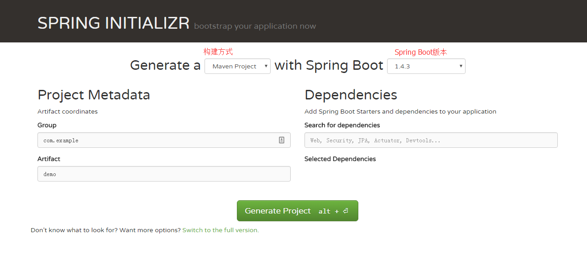
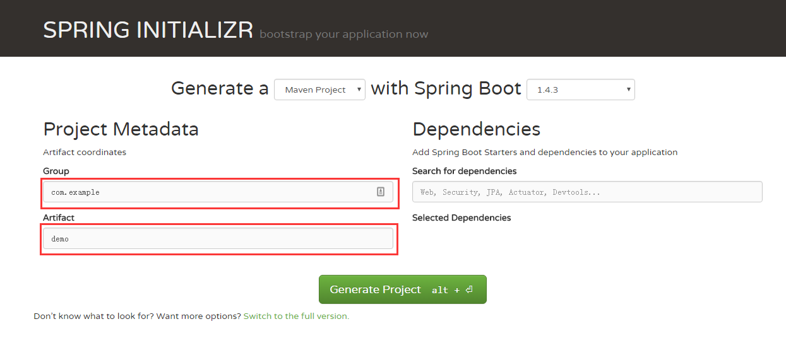
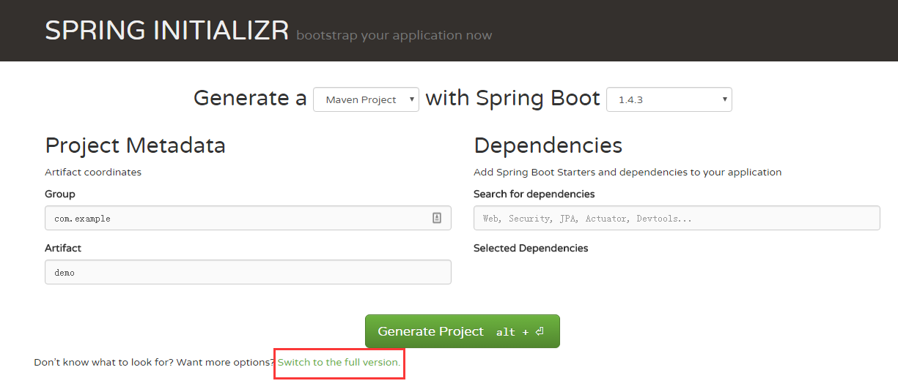
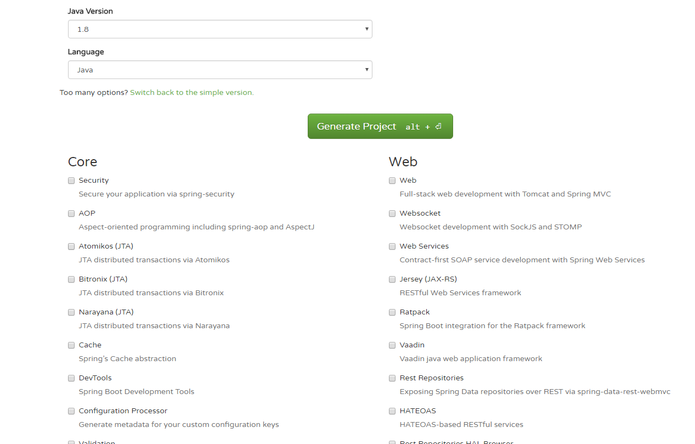

相关背景
Spring Boot是由Pivotal团队提供的全新框架，其设计目的是用来简化新Spring应用的初始搭建以及开发过程。该框架使用了特定的方式来进行配置，从而使开发人员不再需要定义样板化的配置。通过这种方式，Boot致力于在蓬勃发展的快速应用开发领域（rapid application development）成为领导者。
多年以来，Spring IO平台饱受非议的一点就是大量的XML配置以及复杂的依赖管理。在去年的SpringOne 2GX会议上，Pivotal的CTO Adrian Colyer回应了这些批评，并且特别提到该平台将来的目标之一就是实现免XML配置的开发体验。Boot所实现的功能超出了这个任务的描述，开发人员不仅不再需要编写XML，而且在一些场景中甚至不需要编写繁琐的import语句。在对外公开的beta版本刚刚发布之时，Boot描述了如何使用该框架在140个字符内实现可运行的web应用，从而获得了极大的关注度，该样例发表在tweet上。
然而，Spring Boot并不是要成为Spring IO平台里面众多“Foundation”层项目的替代者。Spring Boot的目标不在于为已解决的问题域提供新的解决方案，而是为平台带来另一种开发体验，从而简化对这些已有技术的使用。对于已经熟悉Spring生态系统的开发人员来说，Boot是一个很理想的选择，不过对于采用Spring技术的新人来说，Boot提供一种更简洁的方式来使用这些技术。
在追求开发体验的提升方面，Spring Boot，甚至可以说整个Spring生态系统都使用到了Groovy编程语言。Boot所提供的众多便捷功能，都是借助于Groovy强大的MetaObject协议、可插拔的AST转换过程以及内置的依赖解决方案引擎所实现的。在其核心的编译模型之中，Boot使用Groovy来构建工程文件，所以它可以使用通用的导入和样板方法（如类的main方法）对类所生成的字节码进行装饰（decorate）。这样使用Boot编写的应用就能保持非常简洁，却依然可以提供众多的功能
快速开始
- 访问Spring Initializr
- 选择构建方式Maven，Spring Boot 版本
 - 填写group，artifact
 - 选择所需依赖，如果不记得依赖的名称，可以点击
Switch to the full version.

 - 点击
Generate Project， 进行下载。
配置运行
- 接下压缩包，用你熟悉的ide打开项目
- 删除
mvnw，mvnw.cmd文件和.mvn目录 - 编写一个Controller
1
2
3
4
5
6
7
8
9
public class HomeController {
public void hello(HttpServletRequest request, HttpServletResponse response) throws IOException {
response.getWriter().write("Hello World");
}
} - 运行
XXApplication的main方法，访问http://localhost:8080，观看到Hello World，即代表成功。